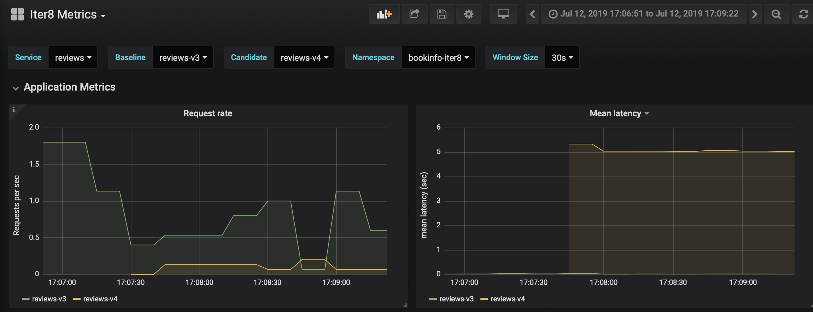
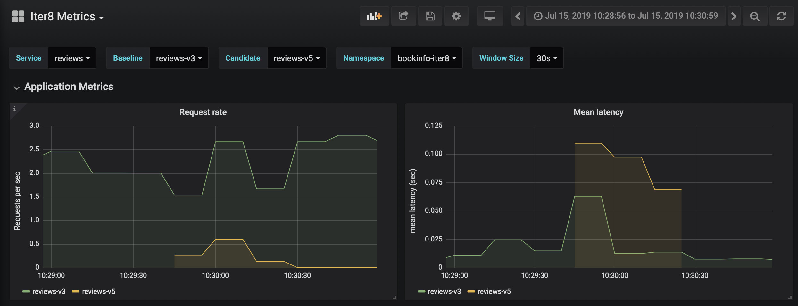
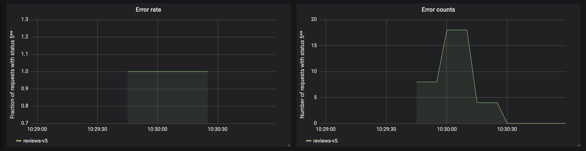
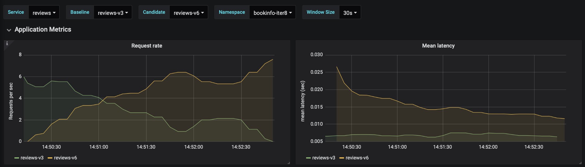
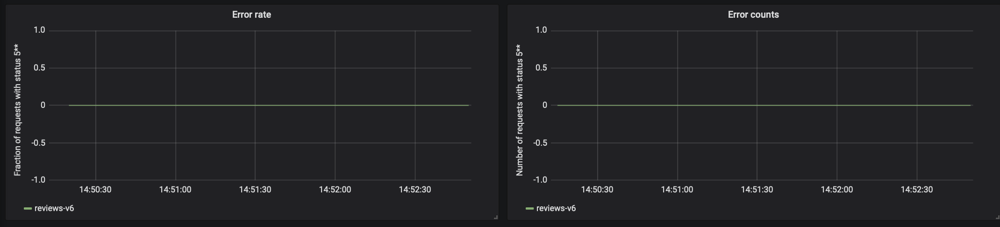
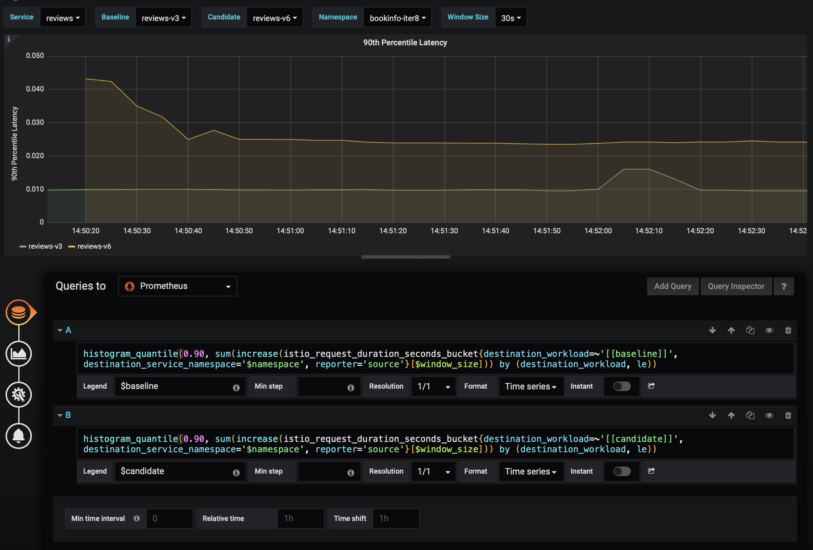

Automated canary releases with iter8 on Kubernetes and Istio
This tutorial shows you how iter8 can be used to perform canary releases by gradually shifting traffic to a canary version of a microservice.
This tutorial has five parts, with each part building on the previous one. You will learn:
- How to perform a canary rollout with iter8
- How to set different success criteria for iter8 to analyze canary releases and determine success or failure
- How to have iter8 immediately stop an experiment as soon as a criterion is not met
- How to use your own custom metrics in success criteria for canary analyses
- How iter8 can be used for canary releases of both internal and user-facing services
The tutorial is based on the Bookinfo sample
application that is distributed with Istio. This application
comprises four microservices, namely, productpage, details,
reviews, and ratings, as illustrated here.
Please, follow our instructions below to deploy the sample application as part of the tutorial.
YAML files used in the tutorial
All Kubernetes YAML files you will need in this tutorial are in the iter8-controller
repository here.
Successful canary release: reviews-v2 to reviews-v3
Step 1: Deploy the Bookinfo application
At this point, we assume that you have already followed the instructions to install iter8 on your Kubernetes cluster. The next step is to deploy the sample application we will use for the tutorial.
First, let us create a bookinfo-iter8 namespace configured to enable auto-injection
of the Istio sidecar:
kubectl apply -f https://raw.githubusercontent.com/iter8-tools/iter8-controller/v0.2.1/doc/tutorials/istio/bookinfo/namespace.yaml
Next, let us deploy the Bookinfo application:
kubectl apply -n bookinfo-iter8 -f https://raw.githubusercontent.com/iter8-tools/iter8-controller/v0.2.1/doc/tutorials/istio/bookinfo/bookinfo-tutorial.yaml
You should see the following pods in the bookinfo-iter8 namespace. Make sure the
pods' status is
"Running." Also, note that there should be two containers in each pod, since the Istio sidecar was
injected.
kubectl get pods -n bookinfo-iter8
NAME READY STATUS RESTARTS AGE details-v1-68c7c8666d-m78qx 2/2 Running 0 64s productpage-v1-7979869ff9-fln6g 2/2 Running 0 63s ratings-v1-8558d4458d-rwthl 2/2 Running 0 64s reviews-v2-df64b6df9-ffb42 2/2 Running 0 63s
We have deployed "version 2" of the reviews microservice, and version 1 of all
others.
Let us now expose the edge productpage service by creating an Istio Gateway for it.
kubectl apply -n bookinfo-iter8 -f https://raw.githubusercontent.com/iter8-tools/iter8-controller/v0.2.1/doc/tutorials/istio/bookinfo/bookinfo-gateway.yaml
You should now see the Istio Gateway and VirtualService for productpage, as below:
kubectl get gateway -n bookinfo-iter8
NAME AGE bookinfo-gateway 22s
kubectl get vs -n bookinfo-iter8
NAME GATEWAYS HOSTS AGE bookinfo [bookinfo-gateway] [bookinfo.sample.dev] 27s
As you can see above, we have associated Bookinfo's edge service with a fake host, namely,
bookinfo.sample.dev.
Step 2: Access the Bookinfo application
To access the application, you need to determine the ingress IP and port for the application in
your environment. You can do so by following steps 3 and 4 of the Istio instructions here to set
the environment variables INGRESS_HOST, INGRESS_PORT, and
GATEWAY_URL, which will capture the correct IP
address and port for your environment. Once you have done so, you can check if you can access the
application with the following command:
curl -H "Host: bookinfo.sample.dev" -o /dev/null -s -w "%{http_code}\n" "http://${GATEWAY_URL}/productpage"
If everything is working, the command above should show 200. Note that the curl
command above sets the host header to match the host we associated the VirtualService with
(bookinfo.sample.dev). If
you want to access the application from your browser, you will need to set this header using a
browser's plugin of your choice.
Step 3: Generate load to the application
Let us now generate load to the application, emulating requests coming from users. To do so, we recommend you run the command below on a separate terminal:
watch -n 0.1 'curl -H "Host: bookinfo.sample.dev" -Is "http://${GATEWAY_URL}/productpage"'
This command will send 10 requests per second to the application. Note that the environment
variable GATEWAY_URL must have been set as per step 2 above. Among other things, the command output should show an HTTP code of 200, as below:
HTTP/1.1 200 OK content-type: text/html; charset=utf-8 content-length: 5719 server: istio-envoy (...)
Step 4: Configure a canary rollout for the reviews service
At this point, Bookinfo is using version 2 of the reviews service
(reviews-v2). Let us now use iter8
to automate the canary rollout of version 3 of this service (reviews-v3).
First, we need to tell iter8 that we are about to perform this canary rollout. To that end, we
create an Experiment configuration specifying the rollout details. In this tutorial,
let us use the following Experiment configuration:
apiVersion: iter8.tools/v1alpha1
kind: Experiment
metadata:
name: reviews-v3-rollout
spec:
targetService:
name: reviews
apiVersion: v1
baseline: reviews-v2
candidate: reviews-v3
trafficControl:
strategy: check_and_increment
interval: 30s
trafficStepSize: 20
maxIterations: 8
maxTrafficPercentage: 80
analysis:
analyticsService: "http://iter8-analytics:8080"
successCriteria:
- metricName: iter8_latency
toleranceType: threshold
tolerance: 200
sampleSize: 5
The configuration above specifies the baseline and candidate versions in terms of Kubernetes
deployment names. The rollout is configured to last for eight iterations
(maxIterations) of 30s (interval). At the end of each
iteration, if the candidate version meets the specified success criteria, the traffic sent to it
will increase by 20 percentage points (trafficStepSize) up to 80%
(maxTrafficPercentage). At the end of the last iteration, if the success criteria are
met, the candidate version will take over from the baseline.
In the example above, we specified only one success criterion. In particular, we stated that the mean
latency exhibited by the candidate version should not exceed the threshold of 200 milliseconds. At
the end of each iteration, iter8-controller calls iter8-analytics, which
in turn analyzes the metrics of interest (in this case, only mean latency) against the
corresponding criteria. The number of data points analyzed during an experiment is cumulative,
that is, it carries over from iteration to iteration.
The next step of this tutorial is to actually create the configuration above. To that end, you
can either copy and paste the YAML above to a file and then run
kubectl apply -n bookinfo-iter8 -f on it, or you can run the following command:
kubectl apply -n bookinfo-iter8 -f https://raw.githubusercontent.com/iter8-tools/iter8-controller/v0.2.1/doc/tutorials/istio/bookinfo/canary_reviews-v2_to_reviews-v3.yaml
You can verify that the Experiment object has been created as shown below:
kubectl get experiments -n bookinfo-iter8
NAME PHASE STATUS BASELINE PERCENTAGE CANDIDATE PERCENTAGE reviews-v3-rollout Pause TargetsNotFound: Missing Candidate reviews-v2 100 reviews-v3
As you can see, iter8 is reporting that 100% of the traffic is sent to the baseline version
(reviews-v2) and that the candidate (reviews-v3) is missing. As soon as
the controller sees the
candidate version, it will start the rollout. Next, let us deploy the candidate version to trigger
the canary rollout.
Step 5: Deploy the canary version and start the rollout
As soon as we deploy reviews-v3, iter8-controller will start the rollout. To deploy
reviews-v3, you can run the following command:
kubectl apply -n bookinfo-iter8 -f https://raw.githubusercontent.com/iter8-tools/iter8-controller/v0.2.1/doc/tutorials/istio/bookinfo/reviews-v3.yaml
Now, if you check the state of the Experiment object corresponding to this rollout,
you should see
that the rollout is in progress, and that 20% of the traffic is now being sent to
reviews-v3:
kubectl get experiments -n bookinfo-iter8
NAME PHASE STATUS BASELINE PERCENTAGE CANDIDATE PERCENTAGE reviews-v3-rollout Progressing IterationUpdate: Iteration 1 Started reviews-v2 80 reviews-v3 20
At about every 30s you should see the traffic shift towards reviews-v3 by 20
percentage points.
Step 6: Check the Grafana dashboard
You can also check a Grafana dashboard specific to the Experiment object corresponding to the rollout you are
running. The URL to the Grafana dashboard for the experiment is the value of the field grafanaURL
under the object's status. One way to get the Grafana URL that you can paste to your browser is
through the following command:
kubectl get experiment reviews-v3-rollout -o jsonpath='{.status.grafanaURL}' -n bookinfo-iter8
By default, the base URL given by iter8 to Grafana is http://localhost:3000. In a typical Istio installation, you can port-forward your Grafana from Kubernetes to your localhost's port 3000 with the following command:
kubectl -n istio-system port-forward $(kubectl -n istio-system get pod -l app=grafana -o jsonpath='{.items[0].metadata.name}') 3000:3000
Below is a screenshot of a portion of the Grafana dashboard showing the request rate and the mean
latency for reviews-v2 and reviews-v3, right after the controller ended
the experiment.
Note how the traffic shifted towards the canary during the experiment. You can also see that the canary's mean latency was way below the configured threshold of 200 milliseconds.
High-latency canary release: reviews-v3 to reviews-v4
At this point, you must have completed the part 1 of the tutorial successfully. You can confirm it as follows:
kubectl get experiment reviews-v3-rollout -n bookinfo-iter8
NAME PHASE STATUS BASELINE PERCENTAGE CANDIDATE PERCENTAGE reviews-v3-rollout Completed ExperimentSucceeded: All Success Criteria Were Met reviews-v2 0 reviews-v3 100
The command above's output shows that reviews-v3 took over from reviews-v2 as part of the canary
rollout performed before.
Step 1: Canary rollout configuration
Now, let us set up a canary rollout for reviews-v4, using the following Experiment
configuration:
apiVersion: iter8.tools/v1alpha1
kind: Experiment
metadata:
name: reviews-v4-rollout
spec:
targetService:
name: reviews
apiVersion: v1
baseline: reviews-v3
candidate: reviews-v4
trafficControl:
strategy: check_and_increment
interval: 30s
trafficStepSize: 20
maxIterations: 6
maxTrafficPercentage: 80
analysis:
analyticsService: "http://iter8-analytics:8080"
successCriteria:
- metricName: iter8_latency
toleranceType: threshold
tolerance: 200
sampleSize: 5
The configuration above is pretty much the same we used in part 1, except that now the baseline
version is reviews-v3 and the candidate is reviews-v4.
To create the above Experiment object, run the following command:
kubectl apply -n bookinfo-iter8 -f https://raw.githubusercontent.com/iter8-tools/iter8-controller/v0.2.1/doc/tutorials/istio/bookinfo/canary_reviews-v3_to_reviews-v4.yaml
Or, if using a newer version of Istio (1.5 or greater) with telemetry v2:
kubectl apply -n bookinfo-iter8 -f https://raw.githubusercontent.com/iter8-tools/iter8-controller/0.2.1/doc/tutorials/istio/bookinfo/canary_reviews-v3_to_reviews-v4_telemetry-v2.yaml
You can list all Experiment objects like so:
kubectl get experiments -n bookinfo-iter8
NAME PHASE STATUS BASELINE PERCENTAGE CANDIDATE PERCENTAGE reviews-v3-rollout Completed ExperimentSucceeded: All Success Criteria Were Met reviews-v2 0 reviews-v3 100 reviews-v4-rollout Pause TargetsNotFound: Missing Candidate reviews-v3 100 reviews-v4 0
The output above shows the new object you just created, for which the candidate deployment
reviews-v4 is missing. Let us deploy reviews-v4 next so that the rollout can begin.
Step 2: Deploy reviews-v4 and start the rollout
As you have already seen, as soon as we deploy the candidate version, iter8-controller will start
the rollout. This time, however, the candidate version (reviews-v4) has a performance issue
preventing it from satisfying the success criteria in the Experiment object. As a
result, iter8 will roll back to the baseline version.
To deploy reviews-v4, run the following command:
kubectl apply -n bookinfo-iter8 -f https://raw.githubusercontent.com/iter8-tools/iter8-controller/v0.2.1/doc/tutorials/istio/bookinfo/reviews-v4.yaml
Now, if you check the state of the Experiment object corresponding to this rollout,
you should see
that the rollout is in progress, and that 20% of the traffic is now being sent to reviews-v4.
kubectl get experiments -n bookinfo-iter8
NAME PHASE STATUS BASELINE PERCENTAGE CANDIDATE PERCENTAGE reviews-v3-rollout Completed ExperimentSucceeded: All Success Criteria Were Met reviews-v2 0 reviews-v3 100 reviews-v4-rollout Progressing IterationUpdate: Iteration 1 Started reviews-v3 80 reviews-v4 20
However, unlike the previous rollout, traffic will not shift towards the candidate reviews-v4
because it does not meet the success criteria due to a performance problem. At the end of the
experiment, iter8 rolls back to the baseline (reviews-v3), as seen below:
kubectl get experiment reviews-v4-rollout -n bookinfo-iter8
NAME PHASE STATUS BASELINE PERCENTAGE CANDIDATE PERCENTAGE reviews-v4-rollout Completed ExperimentFailed: Not All Success Criteria Met reviews-v3 100 reviews-v4 0
Step 3: Check the Grafana dashboard
As before, you can check the Grafana dashboard corresponding to the canary release of reviews-v4.
To get the URL to the dashboard specific to this canary release, run the following command:
kubectl get experiment reviews-v4-rollout -o jsonpath='{.status.grafanaURL}' -n bookinfo-iter8

The dashboard screenshot above shows that the canary version (reviews-v4) consistently exhibits a high latency of 5 seconds, way above the threshold of 200 milliseconds specified in our success criterion, and way above the baseline version's latency.
Error-producing canary release: reviews-v3 to reviews-v5
At this point, you must have completed parts 1 and 2 of the tutorial successfully. You can confirm it as follows:
kubectl get experiments -n bookinfo-iter8
NAME PHASE STATUS BASELINE PERCENTAGE CANDIDATE PERCENTAGE reviews-v3-rollout Completed ExperimentSucceeded: All Success Criteria Were Met reviews-v2 0 reviews-v3 100 reviews-v4-rollout Completed ExperimentFailed: Not All Success Criteria Met reviews-v3 100 reviews-v4 0
The command above's output shows that reviews-v3 took over from reviews-v2 as part of the canary
rollout performed before on part 1, and that it continues to be the current version after iter8
had determined that reviews-v4 was unsatisfactory.
Step 1: Canary rollout configuration
Now, let us set up a canary rollout for reviews-v5, using the following Experiment
configuration:
apiVersion: iter8.tools/v1alpha1
kind: Experiment
metadata:
name: reviews-v5-rollout
spec:
targetService:
name: reviews
apiVersion: v1
baseline: reviews-v3
candidate: reviews-v5
trafficControl:
strategy: check_and_increment
interval: 30s
trafficStepSize: 20
maxIterations: 6
maxTrafficPercentage: 80
analysis:
analyticsService: "http://iter8-analytics:8080"
successCriteria:
- metricName: iter8_latency
toleranceType: threshold
tolerance: 200
sampleSize: 5
- metricName: iter8_error_rate
toleranceType: delta
tolerance: 0.02
sampleSize: 10
stopOnFailure: true
The configuration above differs from the previous ones as follows. We added a second success
criterion on the error-rate metric so that the canary version (reviews-v5) not only must have a
mean latency below 200 milliseconds, but it also needs to have an error rate that cannot exceed the
baseline error rate by more than 2%. That comparative analysis on a metric is specified as a
delta tolerance type. Furthermore, the second success criterion sets the flag
stopOnFailure, which means iter8
will roll back to the baseline as soon as the error rate criterion is violated and the minimum
number of 10 data points is collected (sampleSize = 10).
To create the above Experiment object, run the following command:
kubectl apply -n bookinfo-iter8 -f https://raw.githubusercontent.com/iter8-tools/iter8-controller/v0.2.1/doc/tutorials/istio/bookinfo/canary_reviews-v3_to_reviews-v5.yaml
Step 2: Deploy reviews-v5 and start the rollout
As you already know, as soon as we deploy the candidate version, iter8-controller will start the
rollout. This time, the candidate version (reviews-v5) has a bug that causes it to return HTTP
errors to its callers. As a result, iter8 will roll back to the baseline version based on the
success criterion on the error-rate metric defined above.
To deploy reviews-v5, run the following command:
kubectl apply -n bookinfo-iter8 -f https://raw.githubusercontent.com/iter8-tools/iter8-controller/v0.2.1/doc/tutorials/istio/bookinfo/reviews-v5.yaml
If you check the state of the Experiment object corresponding to this rollout, you
should see that
the rollout is in progress, and that 20% of the traffic is now being sent to reviews-v5.
kubectl get experiments -n bookinfo-iter8
NAME PHASE STATUS BASELINE PERCENTAGE CANDIDATE PERCENTAGE reviews-v3-rollout Completed ExperimentSucceeded: All Success Criteria Were Met reviews-v2 0 reviews-v3 100 reviews-v4-rollout Completed ExperimentFailed: Not All Success Criteria Met reviews-v3 100 reviews-v4 0 reviews-v5-rollout Progressing IterationUpdate: Iteration 1 Started reviews-v3 80 reviews-v5 20
Because review-v5 has an issue causing it to return HTTP errors, as per the success criteria we
have specified the traffic will not shift towards it. Furthermore, because the error-rate success
criteria indicated the need to stop on failure, without waiting for the entire duration of the
experiment, iter8 will rollback to reviews-v3 quickly. You should see the following after several
seconds:
kubectl get experiments -n bookinfo-iter8
NAME PHASE STATUS BASELINE PERCENTAGE CANDIDATE PERCENTAGE reviews-v3-rollout Completed ExperimentSucceeded: All Success Criteria Were Met reviews-v2 0 reviews-v3 100 reviews-v4-rollout Completed ExperimentFailed: Not All Success Criteria Met reviews-v3 100 reviews-v4 0 reviews-v5-rollout Completed ExperimentFailed: Aborted reviews-v3 100 reviews-v5 0
Step 3: Check the Grafana dashboard
As before, you can check the Grafana dashboard corresponding to the canary release of reviews-v5.
To get the URL to the dashboard specific to this canary release, run the following command:
kubectl get experiment reviews-v5-rollout -o jsonpath='{.status.grafanaURL}' -n bookinfo-iter8


The dashboard screenshots above show that traffic to the canary version (reviews-v5) is quickly
interrupted. Also, while the reviews-v5 latency is way below the threshold of 200 milliseconds we defined in the latency success criterion, its error rate is 100%, i.e., it generates errors for every single request it processes. That does not meet the error-rate success criterion we defined, which
specified that the canary's error rate must be within 2% of that of the baseline (reviews-v3)
version. According to the dashboard, reviews-v3 produced no errors at all.
Using a custom metric
At this point, you should have completed parts 1, 2, and 3 of the tutorial successfully. You can confirm it as follows:
kubectl get experiments -n bookinfo-iter8
NAME PHASE STATUS BASELINE PERCENTAGE CANDIDATE PERCENTAGE reviews-v3-rollout Completed ExperimentSucceeded: All Success Criteria Were Met reviews-v2 0 reviews-v3 100 reviews-v4-rollout Completed ExperimentFailed: Not All Success Criteria Met reviews-v3 100 reviews-v4 0 reviews-v5-rollout Completed ExperimentFailed: Aborted reviews-v3 100 reviews-v5 0
The command above's output shows that reviews-v3 took over from reviews-v2 as part of the canary
rollout performed before in part 1, and that it continued to be the current version of the reviews service after iter8 had determined that reviews-v4 was unsatisfactory. Similarly, as we saw in the
previous part 3, the experiment to rollout reviews-v5 was aborted because of failure to satisfy
the success criteria defined by the user.
In this tutorial, we will define a custom metric (one not provided by iter8 out of the box) and use it in the success criteria for a canary release.
By default iter8 provides a few metrics which you can see if you type:
kubectl get configmap iter8config-metrics -n iter8 -oyaml
In principle, any metric that can be derived from the data you have in your Prometheus database
that might be meaningful to you in assessing the health of a service version can be used by iter8.
Next, we are going to make iter8 aware of a metric that we will call
iter8_90_perc_latency, which
measures the 90th percentile latency of a service. In order to make iter8 aware of a new metric we
need to add it to the iter8config-metrics config map. For the purposes of this
tutorial, we will do
so by running the following command:
kubectl apply -n iter8 -f https://raw.githubusercontent.com/iter8-tools/iter8-controller/v0.2.1/doc/tutorials/istio/bookinfo/iter8_metrics_extended.yaml
Or, if using a newer version of Istio (1.5 or greater) with telemetry v2:
kubectl apply -n iter8 -f https://raw.githubusercontent.com/iter8-tools/iter8-controller/v0.2.1/doc/tutorials/istio/bookinfo/iter8_metrics_extended_telemetry-v2.yaml
Note
For additional information about how to add a new metric to the existing configuration please see this documentation.
To verify that the new metric has been added to the ConfigMap, you can check it
again:
kubectl get configmap iter8config-metrics -n iter8 -oyaml
We will now configure an experiment to use this new metric for a canary release.
Step 1: Canary rollout configuration
Now, let us set up a canary rollout for reviews-v6, using the following Experiment
configuration:
apiVersion: iter8.tools/v1alpha1
kind: Experiment
metadata:
name: reviews-v6-rollout
spec:
targetService:
name: reviews
apiVersion: v1
baseline: reviews-v3
candidate: reviews-v6
trafficControl:
strategy: check_and_increment
interval: 30s
trafficStepSize: 20
maxIterations: 6
maxTrafficPercentage: 80
analysis:
analyticsService: "http://iter8-analytics:8080"
successCriteria:
- metricName: iter8_90_perc_latency
toleranceType: threshold
tolerance: 200
sampleSize: 5
The configuration uses the newly extended metric iter8_90_perc_latency. The success
criteria asserts
that the canary version (reviews-v6) must have the 90th percentile latency below 200 milliseconds.
To create the above Experiment object, run the following command:
kubectl apply -n bookinfo-iter8 -f https://raw.githubusercontent.com/iter8-tools/iter8-controller/v0.2.1/doc/tutorials/istio/bookinfo/canary_reviews-v3_to_reviews-v6.yaml
As usual, iter8 is waiting for the candidate version to be deployed:
kubectl get experiments -n bookinfo-iter8
NAME PHASE STATUS BASELINE PERCENTAGE CANDIDATE PERCENTAGE reviews-v3-rollout Completed ExperimentSucceeded: All Success Criteria Were Met reviews-v2 0 reviews-v3 100 reviews-v4-rollout Completed ExperimentFailed: Not All Success Criteria Met reviews-v3 100 reviews-v4 0 reviews-v5-rollout Completed ExperimentFailed: Aborted reviews-v3 100 reviews-v5 0 reviews-v6-rollout Pause TargetsNotFound: Missing Candidate reviews-v3 100 reviews-v6 0
Step 2: Deploy reviews-v6 and start the rollout
As soon as we deploy the candidate version, iter8-controller will start the rollout. This time,
the candidate version (reviews-v6) is similar to the earlier reviews-v3 which behaved normally. As a result, iter8 will roll forward to the candidate version based on the success criterion on the
newly extended metric defined above.
To deploy reviews-v6, run the following command:
kubectl apply -n bookinfo-iter8 -f https://raw.githubusercontent.com/iter8-tools/iter8-controller/v0.2.1/doc/tutorials/istio/bookinfo/reviews-v6.yaml
If you check the state of the Experiment object corresponding to this rollout, you
should see that the rollout is in progress, and that 20% of the traffic is now being sent to
reviews-v6.
kubectl get experiments -n bookinfo-iter8
NAME PHASE STATUS BASELINE PERCENTAGE CANDIDATE PERCENTAGE reviews-v3-rollout Completed ExperimentSucceeded: All Success Criteria Were Met reviews-v2 0 reviews-v3 100 reviews-v4-rollout Completed ExperimentFailed: Not All Success Criteria Met reviews-v3 100 reviews-v4 0 reviews-v5-rollout Completed ExperimentFailed: Aborted reviews-v3 100 reviews-v5 0 reviews-v6-rollout Progressing IterationUpdate: Iteration 1 Started reviews-v3 80 reviews-v6 20
At about every 30s you should see the traffic shift towards reviews-v6 by 20 percentage points.
At the end of the experiment, you will see that all traffic has been shifted to the canary
version (reviews-v6)
kubectl get experiments -n bookinfo-iter8
NAME PHASE STATUS BASELINE PERCENTAGE CANDIDATE PERCENTAGE reviews-v3-rollout Completed ExperimentSucceeded: All Success Criteria Were Met reviews-v2 0 reviews-v3 100 reviews-v4-rollout Completed ExperimentFailed: Not All Success Criteria Met reviews-v3 100 reviews-v4 0 reviews-v5-rollout Completed ExperimentFailed: Aborted reviews-v3 100 reviews-v5 0 reviews-v6-rollout Completed ExperimentSucceeded: All Success Criteria Were Met reviews-v3 0 reviews-v6 100
Step 3: Check the Grafana dashboard
As before, you can check the Grafana dashboard corresponding to the canary release of reviews-v6.
To get the URL to the dashboard specific to this canary release, run the following command:
kubectl get experiment reviews-v6-rollout -o jsonpath='{.status.grafanaURL}' -n bookinfo-iter8


You can also extend the Grafana Dashboard with the new metric by adding a new panel to the dashboard that looks as follows:
Other configurations such as title, legend, etc. can be varied as per the user's preference.
User-facing Canary release: productpage-v1 to productpage-v2
Step 1: Traffic configuration
Consider the case now you want to rollout a new version of productpage deployment productpage-v2
and expose the service outside of the cluster to users through the host
productpage.deployment.com. You will need to setup an Istio Gateway:
apiVersion: networking.istio.io/v1alpha3
kind: Gateway
metadata:
name: productpage-gateway
spec:
selector:
istio: ingressgateway # use istio default controller
servers:
- port:
number: 80
name: http
protocol: HTTP
hosts:
- "productpage.deployment.com"
You can run the following command to create the Gateway:
kubectl apply -n bookinfo-iter8 -f https://raw.githubusercontent.com/iter8-tools/iter8-controller/v0.2.1/doc/tutorials/istio/bookinfo/productpage-gateway.yaml
Then emulate traffic flowing from outside of the cluster:
watch -x -n 0.1 curl -Is -H 'Host: productpage.deployment.com' "http://${GATEWAY_URL}/productpage"
Step 2: Canary rollout configuration
As specified in the targetService section of the following Experiment
configuration, we have kubernetes service productpage directing traffic to deployments
productpage-v1 and
productpage-v2. The entry in hosts tells the controller that traffic will come
through "productpage.deployment.com" configured in gateway (istio)
paroductpage-gateway:
apiVersion: iter8.tools/v1alpha1
kind: Experiment
metadata:
name: productpage-v2-rollout
spec:
targetService:
name: productpage
baseline: productpage-v1
candidate: productpage-v2
port: 9080
hosts:
- name: "productpage.deployment.com"
gateway: paroductpage-gateway
trafficControl:
strategy: check_and_increment
interval: 30s
trafficStepSize: 20
maxIterations: 6
maxTrafficPercentage: 80
analysis:
analyticsService: "http://iter8-analytics:8080"
successCriteria:
- metricName: iter8_latency
toleranceType: threshold
tolerance: 3.0
sampleSize: 5
To create this Experiment object, run the following command:
kubectl apply -n bookinfo-iter8 -f https://raw.githubusercontent.com/iter8-tools/iter8-controller/v0.2.1/doc/tutorials/istio/bookinfo/canary_productpage-v1_to_productpage-v2.yaml
Step 3: Deploy productpage-v2 and start the rollout
To deploy the candidate version, productpage-v2, run the command:
kubectl apply -n bookinfo-iter8 -f https://raw.githubusercontent.com/iter8-tools/iter8-controller/v0.2.1/doc/tutorials/istio/bookinfo/productpage-v2.yaml
Now check the state of the Experiment object. You should see that the rollout is in
progress, and that a portion of the traffic is being sent to productpage-v2.
kubectl get experiment productpage-v2-rollout -n bookinfo-iter8
NAME PHASE STATUS BASELINE PERCENTAGE CANDIDATE PERCENTAGE productpage-v2-rollout Progressing IterationUpdate: Iteration 1 Started productpage-v1 80 productpage-v2 20